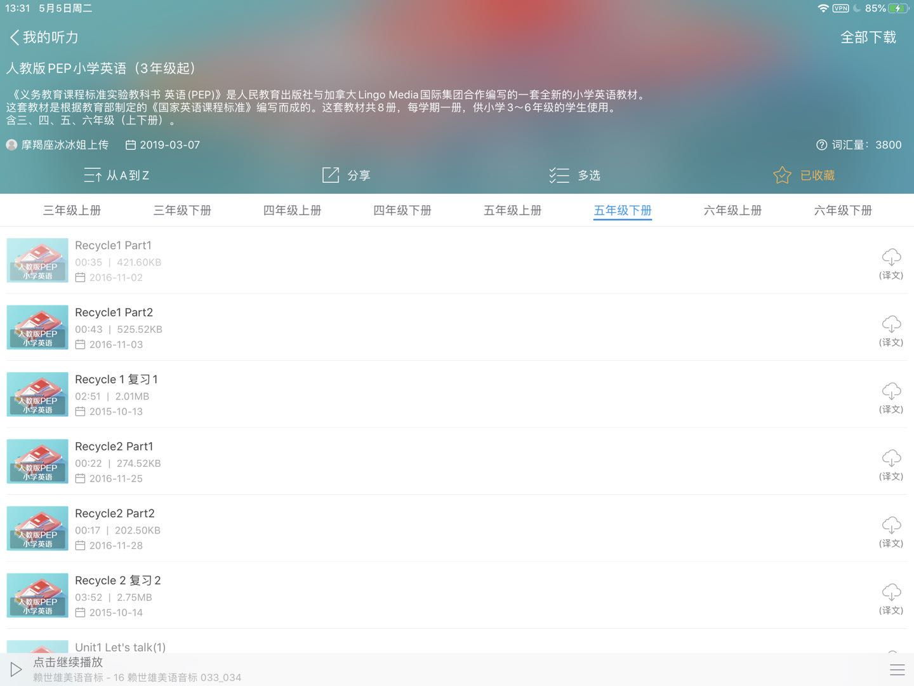
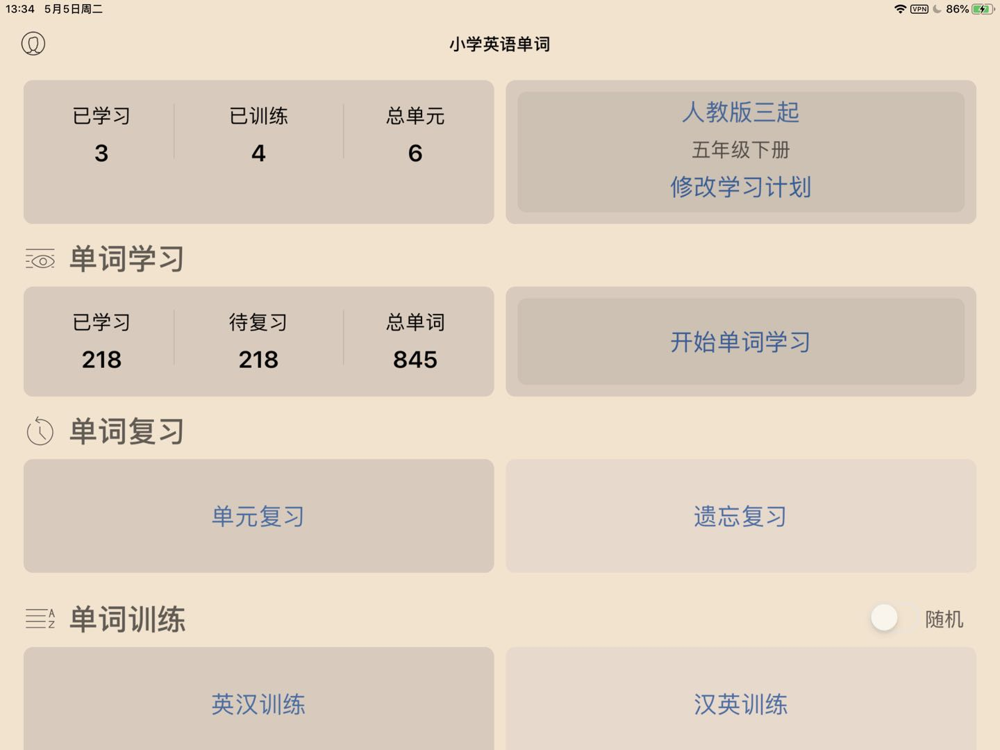
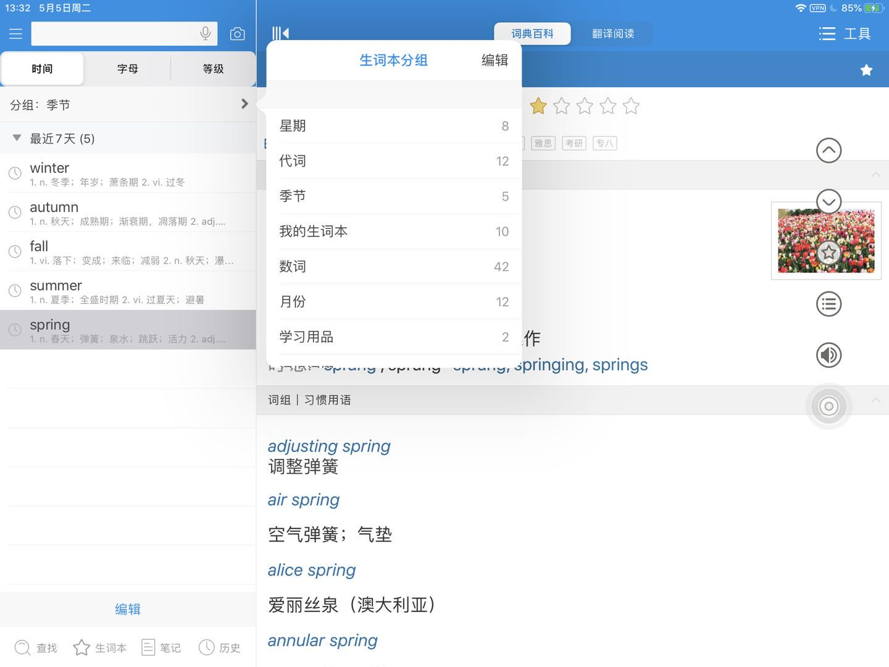

前情说明
小萝莉是我侄女，小学五年级，父母工作都比较忙，总之我把小萝莉的学习这件事揽下来了。
- 疫情期间，主要上网课。小学生比较不自觉，根据她妈妈的说法，一天能玩上五六个小时的电子产品。
- 因为是网课，所以不受限于场地，索性就让小萝莉带着东西到我家住了。（其实就算开学了从我家出发去学校更近）
- 她来的前两天，我的打印机坏了，至今没修。
学习节奏
- 一般是早上8：30 开始听网课，一般9：30能听完早上的课（这娃喜欢倍速播放）
- 她们老师一般是下午或者中午才开始布置作业，数学和英语老师要克制一些，并不是每天都有作业。语文老师身兼班主任，天天都有作业，而且基本都是憨包（一味的抄写）作业。
- 下午有两节课，基本都是音乐美术居多，所以就是耍耍课。
- 所以，除开写作业的时间，每天她是有不少时间可以用来学习的。规则大体是每40分钟休息10分钟。表现好会有30min-60min的奖励，一般出现在考卷子/语文作业后。后期由于小朋友学习摸鱼，还加入了手机摄像头录像监控的措施。（用来明确警告小朋友，可以随时发给她爹妈看看你怎么学习的。算威胁吧.doge）
学前测试
- 因为英文教科书背后的单元单词表一个都读不出来，课文第一课也是乱读，所以英文我判定非常差。
- 数学随机选了教材上的课后练习题测试，“分数”这一章整体是晕的，错题非常多，连蒙带猜的做题。（整个五年级下，核心就是分数）
学习计划
- 数学的目标，掌握课堂内的知识内容。因此并不额外准备参考书，仅仅是课内的教科书和学校发的练习册。
- 英语的目标，掌握课堂的内容，教科书后的单词能够 “听说读写”，课文能够流利的朗读翻译。即可。
学习资料
- 这是主要找的教材电子版。
- 这是一些配套的资源,从这里可以看到不少针对教师的教学指导和教学资源，主要是看看主要的考核中心围绕什么。
- 没错就是百度文库，很多资料总结，小学试卷基本都是在这里被分享，通过充钱平等的下载，通过VIP提升检索结果的展示范围。
英语学习
英语学习比较值得吐槽，因为确实一门语言的学习本来就不应该指望短时间之内飞速提升。
-
首先主要的是要找配套教材的听力内容，毕竟我也是个老学渣了，发音语调不能起错误示范，先入为主十分致命。这一点我优先找的《每日英语听力》这款APP的内容，果不其然全套都有，欢欣鼓舞。——基本等于点读机，还可以设定单句循环，长按取词，以及机器跟读打分，可以说十分完美。

-
其次是单词，上面那款app并不管背单词，于是下了《扇贝单词》，但是并没有对应的小学内容，如果有，也是整个小学的单词乱序，并没有按着教材的年级和unit划分，于是我找到了一款《小学英语单词》的app。这款就完完全全按着PEP的单词表划分年级和unit，单词分为英汉训练/汉英训练/单词拼写/单词默写，四种模式。常规背单词的软件功能基本都有。

-
对于摸底考试，还是要有一次，根据她目前的网课进度，进行一次期中测验是合理的，因此我从百度下载了一份试卷，试卷是这么下载的：文库社 🤫，以及Firefox浏览器”审查元素“后活用”删除HTML节点“和”节点截图“这两个功能。
-
虽然有听力材料和试卷答案，但是总不能让我学渣念听力吧。需要解决听力材料的朗读问题。
-
一开始想到的是方糖slide酱 ，因为用过，十分好用，适合我。结果发现被文件字数的限制给卡死了，因为听力材料，每个句子/字词，往往是需要念 2/3遍的。用复制粘贴的办法导致字数远超1k，无法将整个听力材料搞定——要么我只能按着6道听力拆分成6个PPT，我觉得太累了。
-
之后想如果通过讯飞/有道这些将生成的对应内容.MP3 对应到PPT内的按钮中，就可以实现人工点读，想要多少遍就多少遍——然而算了一下工作量头疼。
-
随后翻找自己的软件库，找到一款《focusky》。在windows操作系统上比mac上表现好太多了，因此，我打开尝试了他的“人工合成”功能，发觉可以非常快速的生成语料按钮，而且由于是VIP用户，可选的英文发音有3个老外。一些听力材料有对话的形式，不同的人音效果会好很多。
-
很快，通过这次测试，我发现单词不仅是这学期的不会，可能小学开始的都不大会，因此之后上百度文库搜了一份《小学英语知识点汇总（超全强烈推荐）》，按着词汇分类整理了PEP小学单词，这种分类会比较有规律抓重点。
-
那么又有个新问题，如何管理这种分类单词？—— 因为依旧需要 标准的发音示范 + 跟读打分
-
我采用了欧路词典，多平台，云同步。小朋友自己分类好生词本，手工录入每一类对应的单词。—— 我也可以根据分类来听写，比如第一部分听写的类别选择为：星期，季节，月份，数词。（这些也是这学期的重点）因为欧路词典是支持导出导入的，暂时放在我的账号上，之后可以随时导出各种格式。

-
之后发觉发音问题也挺大，学校不教音标，因此我找出《赖世雄美语音标》这本书，光盘早扔了，从每日英语听力里面翻出听力材料，每天学两个（就是跟一遍），贪多嚼不烂。（估计要想完全掌握音标，这本书得刷3-5遍）
- 总之英语学习只靠工具是不行的，工具是给大人省事省时但是绝不能省心。什么水平做什么努力，学校内的那点都没掌握就别谈看什么新概念/美国小学语文教材/美剧（我认为对大多数人来说通过美剧学习是十分错误的，因为你的注意力并不是听力，而是画面剧情。什么熏陶不熏陶的，完全是自我陶醉。那种只听音频听写台词的不算，或许说要你时间不追求效率的情况下，你没事看看没中文的美剧/动画片 才算附加好处罢了）
- 另外一个问题是，英语学习自然是出国，游学，外教。可要是没有，用好手中的教材也不丢脸。或者说，既然要考试，考不好谈什么去更好的学校，更好的未来。—— 而且说难听一点，网上叫嚣教材编的不行的人你让他认真考虑编写教材也编不出个啥来，动嘴一套套的。我觉得网上喷教材的人没有认真的把PEP和包括但不限于新概念/美英语文课本对比。
- 作为人教PEP教材，涵盖的地区非常多，各个地区教育发展完全是不同的，老师水平也是有高低，这些都是在教材编写的考虑范畴内的，妈的装逼的人太多了。（指出错误非常欢迎，错误的集合已经相当于是课堂的扩展延伸了
数学学习
数学本身是不需要过多练习的，贵精不贵多。因此我主要是用上教材每个章节后都有的练习题作为主要的练习内容，搭配一本学校发的配套练习册（二者均崭新雪白......）
- 教材后的题每一道都需要做，虽然基础但是全面，而且基本出题意图就是考察意图。
- 练习册选题做，应用题和判断题基本都做，因为这两个一个考察理解题意，一个考察知识点的逆向思维。
这没啥好说的，基本上做题，测试，讲解，订正。
-
做错的题，都需要在订正本上抄题重做，小学就有这个习惯，高中会省事很多。
-
讲解还是有点重要，不能光讲，一些概念要询问小朋友，如果答不出要考虑暂时中断讲解翻开书补一下。
后续计划
-
因为英语实在太糟糕，I have a cat ，她的翻译是：我喜欢小猫。go多了es，goes 不知道啥意思。后续会计划立足PEP英语教材，看看怎么补合适。
-
数学已经有了显著进步，计划是找点靠谱的小学数学总结，查漏补缺。